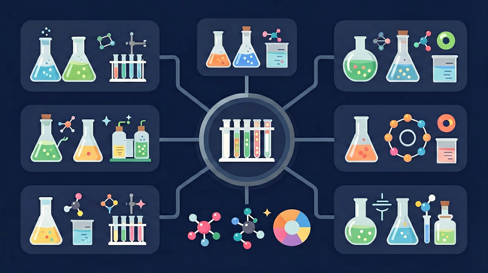

❓ 为什么原子变成离子后，电子数就变了？
❓ 离子和原子到底谁更大？
❓ 氯化钠晶体里真的有NaCl分子吗？
学完这一课，这些问题你都能自信地回答。
🎯 能说出离子与原子的电子排布差异
🎯 能判断常见元素的离子带电性质
🎯 能分析离子化合物中电荷守恒关系

初三 · 化学 · 新概念钠原子和氯原子的"电子交易"——揭开食盐稳定的秘密
我是你的化学小助手。遇到不懂的地方随时问我！
这节课的关键：质子数不变，电子数变 → 电荷变 → 原子变离子。
钠原子（11 个质子，11 个电子）失去最外层 1 个电子后，会变成怎样的粒子？
左边是 钠原子（Na），最外层 1 个电子；右边是 氯原子（Cl），最外层 7 个电子。拖动钠最外层那个黄色电子，把它送到氯那一边——看看会发生什么。
下列粒子中，属于阳离子的是？
某粒子有 13 个质子、10 个电子，该粒子的离子符号是？
下列说法中，正确的是？
📖 3.3 元素——为什么 H、Na、Cl 这些"名字"如此重要？元素周期表是怎么把它们排成"族"的？我们已经知道质子数是元素的"身份证"，下节课就把这本身份证读懂。
先独立作答，再点选项查看对错与错因。
下列哪种粒子在氯化钠形成过程中获得电子？
钠原子转变为钠离子时，发生变化的是
下列各组离子能大量共存于溶液的是
氯原子得到1个电子后，形成带____个负电荷的氯离子
答案：1
每个电子带1个单位负电荷
钠原子失去最外层的____个电子后形成稳定结构
答案：1
钠原子最外层只有1个电子
测试食盐晶体、食盐水的导电性
用钠原子和氯原子模型演示电子转移
金属失电子带正电，非金属得电子带负电
钠离子比原子小，氯离子比原子大
氯化钠晶体中离子规律排列的3D动画
解释镁条燃烧后质量增加的微观原因
✅ 实际是离子键形成的晶体
💡 混淆分子与离子化合物概念
✅ 固态离子化合物需溶解/熔化才导电
💡 忽视电荷自由移动条件
口诀：金属失电子变正太，非金属得电成负娘
类比：就像借钱后你变负翁，对方变土豪
💡 得失电子看离子符号与电荷。
外链：https://phet.colorado.edu/sims/html/build-an-atom/latest/build-an-atom_zh_CN.html
开放任务：用三步写出你如何向同学讲清「离子的形成」。